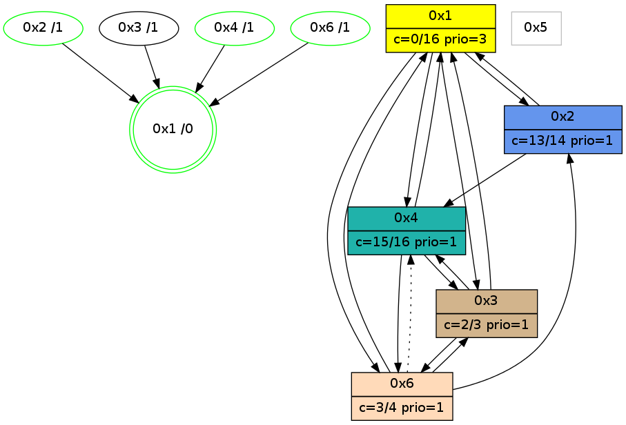

>> << IDX [start] -100 -25 -5 +0 +5 +25 [1165.10660315]
 Previous packets
----------------------------------------------------------------------
1160.084070 beacon01(adaf) #0 coord=01,02,05,03,04,06 cycle=944.0ms assoc
-- color-indic=0 64 20 0d
1160.094031 beacon02(adaf) #0 coord=01,02,05,03,04,06 cycle=944.0ms assoc 64 71 f2
1160.104031 beacon05(adaf) #0 coord=01,02,05,03,04,06 cycle=944.0ms assoc 64 d7 d8
1160.114032 beacon03(adaf) #0 coord=01,02,05,03,04,06 cycle=944.0ms assoc 64 4b fc
1160.124032 beacon04(adaf) #0 coord=01,02,05,03,04,06 cycle=944.0ms assoc 64 ed d6
1160.134032 beacon06(adaf) #0 coord=01,02,05,03,04,06 cycle=944.0ms assoc 64 99 ca
1160.145740 [Hello(4): seq=954 sym=2,1,3,6 sysInfo=hasWarning,MaxColorIndicationCalled,ColoringModeIndicationCalled,MaxColorResponseCalled stat=2:1,3,2,0/1:3,11,9,0/3:6,0,1,0/6:1,0,1,0]
1160.148832 [Hello(1): seq=855 sym=2,4,6,3 color=0 sysInfo=hasWarning,MaxColorIndicationCalled,MaxColorResponseCalled,MaxColorRequestCalled,ColoringModeRequestCalled stat=2:10,3,1,0/4:0,0,1,0/6:11,2,6,0/3:5,0,4,0]
----------------------------------------------------------------------
1161.088574 beacon01(adaf) #0 coord=01,02,05,03,04,06 cycle=944.0ms assoc
-- color-indic=0 64 e4 62
1161.098535 beacon02(adaf) #0 coord=01,02,05,03,04,06 cycle=944.0ms assoc 64 b5 9d
1161.108535 beacon05(adaf) #0 coord=01,02,05,03,04,06 cycle=944.0ms assoc 64 13 b7
1161.118534 beacon03(adaf) #0 coord=01,02,05,03,04,06 cycle=944.0ms assoc 64 8f 93
1161.128535 beacon04(adaf) #0 coord=01,02,05,03,04,06 cycle=944.0ms assoc 64 29 b9
1161.150005 [Hello(6): seq=868 sym=3,1,2 asym=4 color=3 sysInfo=hasWarning,MaxColorIndicationCalled,ColoringModeIndicationCalled,MaxColorResponseCalled stat=3:1,0,2,0/1:13,13,2,0/2:4,0,1,0/4:2,5,5,1]
1161.153882 [Hello(3): seq=953 sym=6,1,4 color=2 sysInfo=hasWarning,MaxColorIndicationCalled,ColoringModeIndicationCalled,MaxColorResponseCalled stat=6:0,0,0,0/1:2,15,6,1/4:0,10,1,1]
----------------------------------------------------------------------
1162.093085 beacon01(adaf) #0 coord=01,02,05,03,04,06 cycle=944.0ms assoc
-- color-indic=0 64 ba 03
1162.103046 beacon02(adaf) #0 coord=01,02,05,03,04,06 cycle=944.0ms assoc 64 eb fc
1162.113046 beacon05(adaf) #0 coord=01,02,05,03,04,06 cycle=944.0ms assoc 64 4d d6
1162.123046 beacon03(adaf) #0 coord=01,02,05,03,04,06 cycle=944.0ms assoc 64 d1 f2
1162.133047 beacon04(adaf) #0 coord=01,02,05,03,04,06 cycle=944.0ms assoc 64 77 d8
1162.143046 beacon06(adaf) #0 coord=01,02,05,03,04,06 cycle=944.0ms assoc 64 03 c4
1162.154781 [Hello(4): seq=955 sym=1,3,6 sysInfo=hasWarning,MaxColorIndicationCalled,ColoringModeIndicationCalled,MaxColorResponseCalled stat=1:4,11,9,0/3:7,0,1,0/6:2,0,1,0]
1162.157196 [Hello(1): seq=856 sym=2,4,6,3 color=0 sysInfo=hasWarning,MaxColorIndicationCalled,MaxColorResponseCalled,MaxColorRequestCalled,ColoringModeRequestCalled stat=2:10,3,1,0/4:0,0,1,0/6:12,2,6,0/3:6,0,4,0]
----------------------------------------------------------------------
1163.097588 beacon01(adaf) #0 coord=01,02,05,03,04,06 cycle=944.0ms assoc
-- color-indic=0 64 7e 6c
1163.107549 beacon02(adaf) #0 coord=01,02,05,03,04,06 cycle=944.0ms assoc 64 2f 93
1163.117550 beacon05(adaf) #0 coord=01,02,05,03,04,06 cycle=944.0ms assoc 64 89 b9
1163.127550 beacon03(adaf) #0 coord=01,02,05,03,04,06 cycle=944.0ms assoc 64 15 9d
1163.137551 beacon04(adaf) #0 coord=01,02,05,03,04,06 cycle=944.0ms assoc 64 b3 b7
1163.147550 beacon06(adaf) #0 coord=01,02,05,03,04,06 cycle=944.0ms assoc 64 c7 ab
1163.158238 [STC(1) #0.207 new-neigh,tree-change,inconsistent-stability,stable,to-color d=0]
----------------------------------------------------------------------
1164.102094 beacon01(adaf) #0 coord=01,02,05,03,04,06 cycle=944.0ms assoc
-- color-indic=0 64 32 dc
1164.112055 beacon02(adaf) #0 coord=01,02,05,03,04,06 cycle=944.0ms assoc 64 63 23
1164.122055 beacon05(adaf) #0 coord=01,02,05,03,04,06 cycle=944.0ms assoc 64 c5 09
1164.132055 beacon03(adaf) #0 coord=01,02,05,03,04,06 cycle=944.0ms assoc 64 59 2d
1164.142057 beacon04(adaf) #0 coord=01,02,05,03,04,06 cycle=944.0ms assoc 64 ff 07
1164.152058 beacon06(adaf) #0 coord=01,02,05,03,04,06 cycle=944.0ms assoc 64 8b 1b
1164.163194 [Hello(1): seq=857 sym=2,4,6,3 color=0 sysInfo=hasWarning,MaxColorIndicationCalled,MaxColorResponseCalled,MaxColorRequestCalled,ColoringModeRequestCalled stat=2:10,3,1,0/4:0,0,1,0/6:13,2,6,0/3:6,0,4,0]
1164.167278 [STC(3)->1 #0.207 new-neigh,tree-change,inconsistent-stability,to-color d=1]
1164.169384 [Hello(4): seq=956 sym=1,3,6 sysInfo=hasWarning,MaxColorIndicationCalled,ColoringModeIndicationCalled,MaxColorResponseCalled stat=1:5,11,10,0/3:7,0,1,0/6:2,0,1,0]
1164.172418 [STC(4)->1 #0.207 new-neigh,tree-change,inconsistent-stability,stable,to-color d=1]
1164.181846 [STC(2)->1 #0.207 new-neigh,tree-change,inconsistent-stability,stable,to-color d=1]